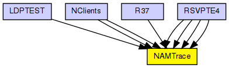
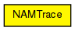

NAMTrace manages a "nam" trace file which can be played back with ns2's Network ANimator, nam. The trace is actually written by NAMTraceWriter modules which should occur per host or router.
See also: NAMTraceWriter
The following diagram shows usage relationships between types. Unresolved types are missing from the diagram.
The following diagram shows inheritance relationships for this type. Unresolved types are missing from the diagram.
| Name | Type | Description |
|---|---|---|
| LDPTEST | network | (no description) |
| NClients | network | (no description) |
| NClients | network | (no description) |
| R37 | network | (no description) |
| RSVPTE4 | network |
Example network to demonstrate RSVP-TE. |
| RSVPTE4 | network |
Example network to demonstrate RSVP-TE. |
| RSVPTE4 | network |
Example network to demonstrate RSVP-TE. |
| RSVPTE4 | network |
Example network to demonstrate RSVP-TE. |
| Name | Type | Default value | Description |
|---|---|---|---|
| logfile | string | "" |
the name of the logfile ("trace.nam") |
| prolog | string | "" |
| Name | Value | Description |
|---|---|---|
| display | i=old/floppy1 | |
| labels | node |
// // NAMTrace manages a "nam" trace file which can be played back with ns2's // Network ANimator, nam. The trace is actually written by NAMTraceWriter // modules which should occur per host or router. // // @see NAMTraceWriter // simple NAMTrace { parameters: string logfile = default(""); // the name of the logfile ("trace.nam") string prolog = default(""); @display("i=old/floppy1"); @labels(node); }